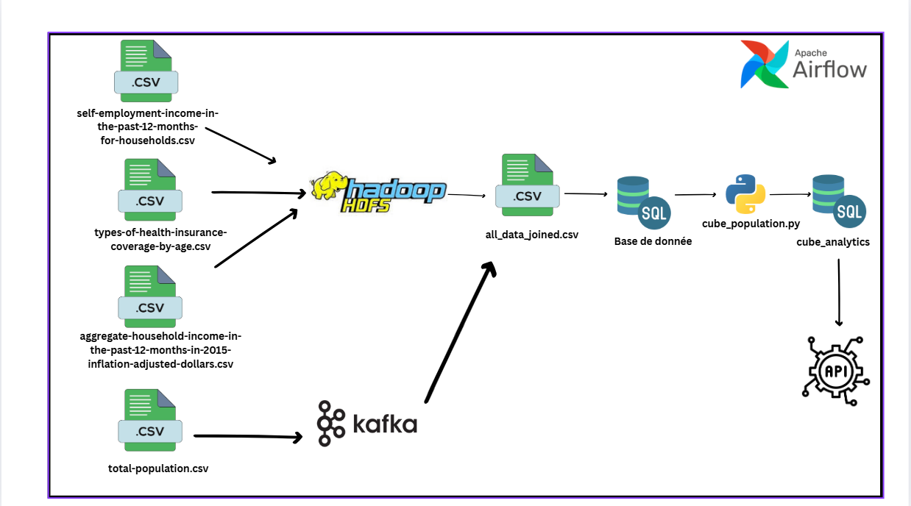
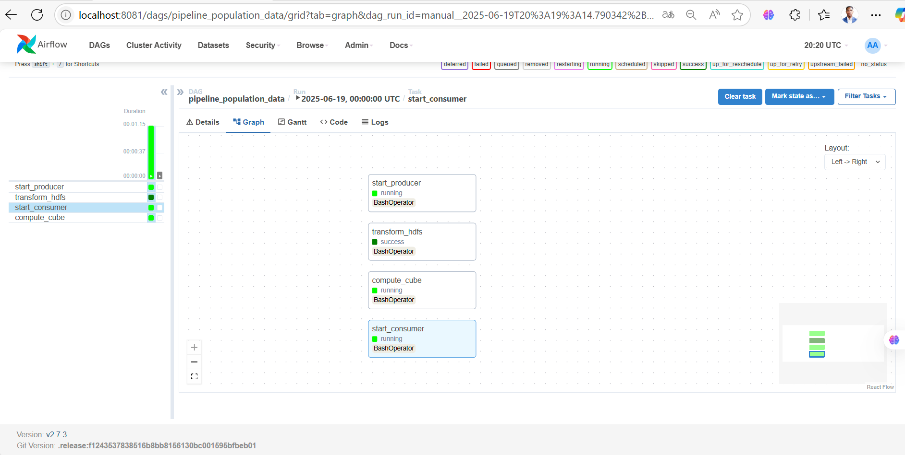

Kafka (temps réel) Spark Streaming/HDFS Airflow (batch) FastAPI (exposition) Prometheus & Grafana (observabilité) Kafka (real-time) Spark Streaming/HDFS Airflow (batch) FastAPI (serving) Prometheus & Grafana (observability)
Mise en place d’une architecture end-to-end qui unifie ingestion temps réel, traitements batch et exposition API afin d’industrialiser la chaîne de valeur des données. Le pipeline s’appuie sur des conteneurs Docker et une orchestration Airflow pour garantir reproductibilité, scalabilité et monitoring. An end-to-end architecture unifying real-time ingestion, batch processing and API serving to industrialize the data value chain. The pipeline relies on Dockerized services and Airflow orchestration for reproducibility, scalability and monitoring.
docker-compose.yml pour
lancer l’ensemble des services et réseaux.Deployment: docker-compose.yml to spin up
all services and networks.
Architecture globale – ingestion temps réel & batch, stockage, serving, observabilité.Global architecture – real‑time & batch, storage, serving, observability.
| Dossier/FichierFolder/File | DescriptionDescription | |
|---|---|---|
kafka_producer/producer.py |
Envoie des messages vers Kafka (topic configuré, clés partition, sérialisation JSON). | Sends messages to Kafka (configured topic, partition keys, JSON serialization). |
spark_streaming/consumer.py |
Consomme Kafka et traite avec Spark (parse, enrichissement, write HDFS). | Consumes Kafka and processes with Spark (parse, enrich, write to HDFS). |
hdfs_data/hdfs_reader.py |
Lecture des CSV HDFS pour consolidation/contrôles qualité. | Reads HDFS CSVs for consolidation/quality checks. |
spark_streaming/cube_population.py |
Création de cubes analytiques (agrégations, partitions, formats efficaces). | Analytical cube creation (aggregations, partitions, efficient formats). |
api/main.py |
API REST FastAPI pour exposer les jeux de données traités. | FastAPI REST to serve processed datasets. |
dags/data_pipeline_dag.py |
DAG Airflow orchestrant les jobs batch (dépendances, retries, SLA). | Airflow DAG orchestrating batch jobs (dependencies, retries, SLA). |
docker-compose.yml |
Démarrage coordonné de tous les conteneurs (réseaux, volumes, env). | Coordinated startup for all containers (networks, volumes, env). |
prometheus.yml |
Scraping des métriques et alerting de base. | Metric scraping and basic alerting. |

Vue DAG – tâches & dépendancesDAG view – tasks & dependencies
Pipeline stream + batch automatisé, reproductible et observable.Automated, reproducible and observable stream + batch pipeline.
Latence réduite du flux à la décision, exposition via API.Lower latency from data to decisions, API‑based serving.
Tolérance aux pannes (retries, reprise), jobs idempotents.Fault tolerance (retries, recovery), idempotent jobs.
# producer.py (Kafka)
producer = KafkaProducer(bootstrap_servers=[...], value_serializer=lambda v: json.dumps(v).encode('utf-8'))
producer.send('events', key=b'user_42', value={"event":"click","ts":time.time()})
# consumer.py (Spark Streaming)
df = spark \
.readStream \
.format("kafka") \
.option("subscribe", "events") \
.load()
parsed = df.selectExpr("CAST(value AS STRING) as json")
# data_pipeline_dag.py (Airflow)
with DAG("data_pipeline", schedule="0 * * * *", catchup=False) as dag:
extract = BashOperator(...)
transform = SparkSubmitOperator(...)
publish = PythonOperator(...)
extract >> transform >> publish